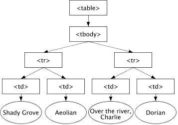
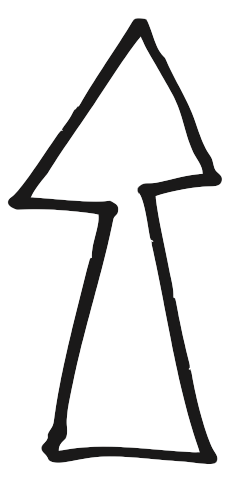

Hallå!


kasia@drzyzga.pl
kasia@spotify.com
@kaaes
Hello JavaScript
Straszny!
Źródło: http://jezyniec.blox.pl/2012/09/TYDZIEN-JEZA-USZATEGO-JEZ-PRAWIE-PO-NAPRAWIE.html
Źródło: http://fotoforum.gazeta.pl/zdjecie/3240023
JavaScript w Twojej lodówce?
jeszcze nie...
…ale…
Źródło: http://www.flickr.com/photos/gadgetgirl70/289011883/
…ale


http://firefoxos.info/
Mmm, vanilla JS
Źródło: http://www.flickr.com/photos/kendiala/99726808/
jQuery
32KB, Minified and Gzipped
1 HTTP requestJavaScript
0 KB,
0 HTTP requestsjQuery
$('div');
$('#id');
$('.class');
$('#container li');
$('#large:nth-child(even)');
JavaScript
document.querySelector('div');
document.querySelector('#id');
document.querySelector('.class');
document.querySelectorAll('#container li');
document.querySelectorAll("#large:nth-child(even)");jQuery
$('div');
$('#id');
$('.class');
$('#container li');
$('#large:nth-child(even)');
JavaScript
function $(selector) {
var elements = document.querySelectorAll(selector);
return elements.length <= 1 ? elements[0] : elements;
}
$('div');
$('#id');
$('.class');
$('#container li');
$('#large:nth-child(even)');jQuery
var myImg = $('<img/>');
myImg.addClass('foo');
myImg.toggleClass('foo');
myImg.attr('alt', 'My image');
myImg.data('name', 'Some name');JavaScript
var myImg = document.createElement('img');
myImg.classList.add('foo');
myImg.classList.toggle('foo');
myImg.setAttribute('alt', 'My image');
myImg.dataset.name = 'Some name';jQuery
$('#myEl').click(callbackFn);
$('a').click(callbackFn);
$('ul').on('click', 'a', callbackFn);JavaScript
var myEl = document.querySelector('#myEl');
myEl.addEventListener('click', callbackFn);
[].forEach.call(document.querySelectorAll('a'), function(el) {
el.addEventListener("click", callbackFn, false);
});
document.addEventListener('click', function(e) {
if (e.target.matchesSelector('ul a')) { /* callbackFn */ }
}, false);Frameworki czy vanilla JavaScript?
to zależy!

Developer Tools
⌘ + ⌥ + I
ctrl + shift + I
Źródło: http://www.flickr.com/photos/75905404@N00/7126147125/
Konsola
$();
$$();
console.log(); / console.dir();
console.log(); / console.warn(); / console.error();
inspect();Zadanie
Za pomocą konsoli:
- policz pole koła o promieniu 5 (πr2)
- policz pierwiastek kwadratowy z 25
- zamień ciąg 'do re mi fa so la si do' na 're mi za'specyfikacja obiektu String
Sources
DOM
od HTML do JS
Źródło: http://www.flickr.com/photos/joeshlabotnik/3707230247/
Document Object Model
HTML → DOM
<div id="info" class="box"><p>Some info</p></div>↓
var info = document.getElementById('info');↓
[HTMLDivElement]
info.id; // "info"
info.className; // "box"
info.innerHTML; // "<p>Some info</p>"
info.getElementsByTagName('p')[0]; // [HTMLParagraphElement]Jak dostać się do elementów DOM
document.querySelector('ul li.active:nth-child(2n)');
document.querySelectorAll('ul li.active')[0];element.querySelector('#myEl');
element.querySelectorAll('ul li.active')[0];function $(selector) {
var elements = document.querySelectorAll(selector);
return elements.length <= 1 ? elements[0] : elements;
}document.getElementById('myEl');
document.getElementsByClassName('box')[0];
document.getElementsByTagName('a')[0];element.getElementById('myEl');
element.getElementsByClassName('box')[0];
element.getElementsByTagName('a')[0];element.parentNode;
element.childNodes;
element.firstChild;
element.lastChild;
element.previousSibling;
element.nextSibling;document.body.childNodes[0].childNodes[1]...HTMLElement
<div id="myBox" class="box info"><p>Some info</p></div>↓
var myBox = document.getElementById('myBox');↓
[HTMLDivElement]
myBox.id // "myBox"
myBox.classList[0] // "box"
myBox.classList[1] // "item"
myBox.className // "box item"
myBox.innerHTML // "<p>Some info</p>"
myBox.style.backgroundColor // "red"
myBox.style.fontFamily // "Arial"el.style and el.style.cssText
el.style.backgroundColor = "red";
el.style.border = "solid 1px blue";
el.style.cssText // "background-color: red; border: 1px solid blue;"
el.style.cssText = "background-color: blue; border: 5px dotted red;"
el.style.backgroundColor // "blue";
el.style.border // "dotted 5px red";
classList vs className
className: "box item"
classList: [DOMTokenList] {
0: "box",
1: "item",
length: 2,
}el.className = "box info";
el.classList.add('small'); // "box info small"
el.classList.remove('info'); // "box small"
el.classList.toggle('box'); // "small"
el.classList.toggle('box'); // "box small"
el.classList.contains('info'); // falseNo więc dlaczego <script> jest zawsze* na dole?
Ćwiczymy
/1-manipulate-element/index.htmlZbudujmy coś!
Źródło: http://www.flickr.com/photos/owly/1856923676/
Jak tworzyć obiekty HTML
var container = document.createElement('section');
container.classList.add('info');
var content = document.createTextNode('Hi there!');
container.appendChild(content);
document.body.appendChild(container);var header = document.createElement('h2');
header.innerHTML = 'I am a header';
container.insertBefore(header, content)documentFragment
var list = document.querySelector('ul');
var fragment = document.createDocumentFragment();
var item;
for (var i = 0; i < 5; i++) {
item = document.createElement('li');
item.innerText = content[i];
fragment.appendChild(item);
}
list.appendChild(fragment);W którą stronę?
Animacje w JS
Źródło: http://www.flickr.com/photos/ujh/4307773392/
Ile JavaScriptu w animacjach?
Eventy
Źródło: http://www.flickr.com/photos/kevindean/4467694685/
Podstawy
element.addEventListener(eventName, handler, useCapture);var a = document.querySelector('a');
a.addEventListener('click', doStuff, false);function doStuff(evt) {
/* evt to obiekt, który zawiera wszystkie
informacje o evencie */
}MouseEvents
click, dblclickKeyboardEvents
keydown, keypress, keyupFocusEvents
focus, blurForm related events
change, input, submit, reset